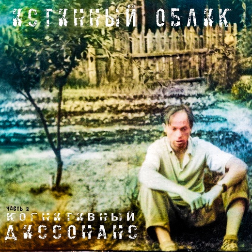
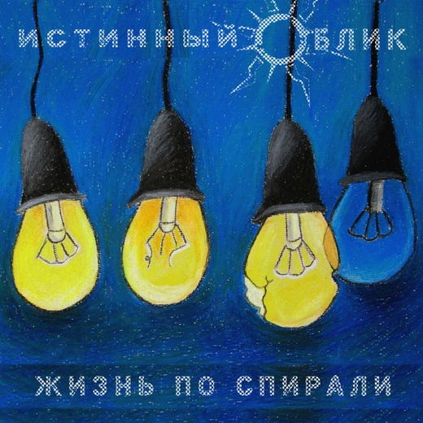
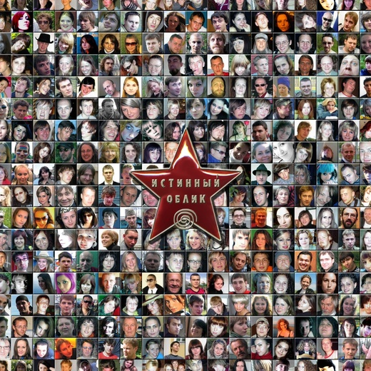
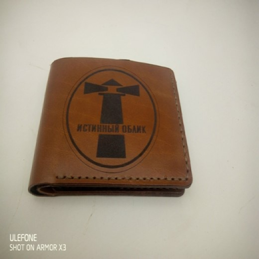

|  |
Пятый студийный альбом-новелла группы "Истинный Облик" |
|  |
Третий студийный альбом-новелла группы "Истинный Облик" |
|  |
Первый студийный альбом-новелла группы "Истинный Облик" |
|  |
Заказывайте эксклюзивные сувениры с символикой "Истинный Облик", |
Дорогой друг, спасибо за поддержку нашего творчества!
Если появилось желание стать счастливым обладателем диска с автографами музыкантов, пиши в сообщения группы В контакте :)
А если вам нужен альбом в цифровом виде, то всё очень просто вы присылаете нам ваш адрес эл.почты,
скидываете 200 рублей на карту 5228 6005 4911 2565 с пометкой "альбом"
и вам высылается мп3-архив с новым альбомом, вуаля!